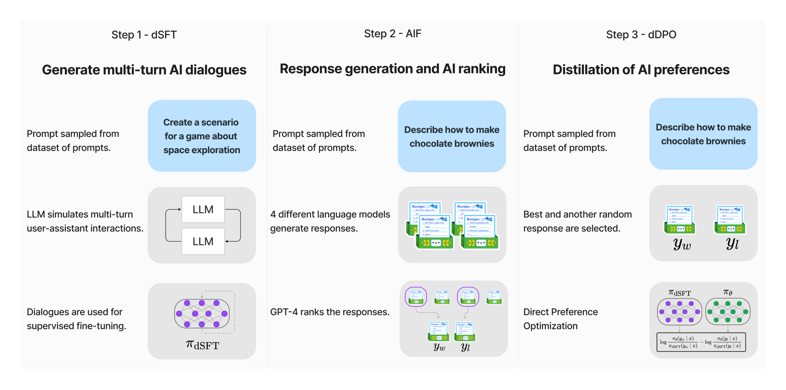

第 22 章 · DPO：直接偏好优化
基于强化学习的经典人类反馈对齐（RLHF）因需要联合维护策略模型、价值基准、参考模型及奖励模型四个深度网络，面临极高的显存开销、策略崩塌与训练不稳定性。直接偏好优化（Direct Preference Optimization, DPO）突破性地揭示了带 KL 散度约束的受限马尔可夫决策过程存在解析闭式解，利用变量代换将隐式奖励函数直接参数化为策略模型本身的对数概率比，使大语言模型仅凭离线成对偏好数据便可完成端到端直接对齐。本章从数学推导、隐式奖励动力学、工程实现、超参调优到经典工业范式（Zephyr dDPO）展开全景剖析，带读者深入这一颠覆性对齐算法的核心机理与落地实践。
1. RLHF 的工程困境与直接偏好的数学转折
自 InstructGPT 将人类反馈强化学习（Reinforcement Learning from Human Feedback, RLHF）确立为大型语言模型对齐事实上的行业基准以来，整个工业界在收获强大对齐能力的同时，也承受着巨大的系统复杂性代价。在经典的近端策略优化（PPO）管线中，后训练工程团队必须在分布式集群中同时协调和运行四个同等规模（或略小）的大模型：负责生成并更新权重的策略网络（Actor）、用于价值估计的评判网络（Critic）、提供分布漂移约束的冷启动参考网络（Reference Model），以及对生成样本打分的奖励网络（Reward Model）。
这种四模型协同体系在工程实践中带来了三大无法忽视的瓶颈：
- 灾难级的显存与通信开销：在训练一个 70B 级别的基座模型时，若采用完整的 PPO 架构，即便引入了 DeepSpeed ZeRO-3 或 FSDP 等参数切片技术，显存占用往往迫使团队必须将 Actor 与 Critic 分离部署或在长序列采样时引入昂贵的 CPU 卸载，导致通信流水线复杂性呈几何级数增加。
- 动态在线采样（On-policy Rollout）的极度低效：PPO 必须依赖 Actor 对输入提示词实时生成长文本回复。大语言模型的自回归解码属于典型的访存密集型（Memory-bound）计算，推理吞吐量相较于反向传播的算力利用率低一个数量级。成千上万卡集群中的大量 GPU 时间被虚耗在等待 Token 逐字吐出的串行阶段。
- 复合误差放大与超参敏感度：奖励模型的泛化盲区、Critic 价值估计的滞后均方误差以及 PPO 策略剪切超参数相互耦合，极易诱发奖励黑客（Reward Hacking）、策略崩塌（Policy Collapse）与不可逆的熵坍缩。工程调试往往需要数十项超参微调，收敛窗口极其逼仄。

面对这一困境，斯坦福大学 Rafailov 等人在 2023 年提出了直接偏好优化（Direct Preference Optimization, DPO）。DPO 的核心数学洞见在于：带相对熵（KL 散度）正则化的强化学习目标，其最优策略与底层奖励函数之间存在精确的解析映射关系。借助这一对偶性质，我们完全不需要显式训练独立的奖励模型，也不需要在训练循环中进行昂贵的在线强化学习采样，而是可以直接通过二元交叉熵损失，让语言模型在静态偏好数据集上端到端地拟合最优偏好概率。
DPO 是一种通过直接优化策略网络在偏好数据对上的相对似然比，实现大模型价值观与指令遵循能力对齐的算法。它在数学上严格证明了带 KL 约束的强化学习最优解等价于一种特殊的对数线性二元分类损失，从而彻底消除了单独训练奖励模型与强化学习在线滚动的需求。
本节小结：DPO 打破了对齐必须经过“训练 RM + 在线 PPO”的传统认知壁垒，用严密的数学推导将复杂强化学习问题降维重构为监督学习风格的分类任务。
2. DPO 数学理论全景推导：从 Bradley-Terry 到对偶目标
理解 DPO 的关键在于彻底掌握从强化学习原始目标向直接策略损失推导的每一个代数步骤。整个推导过程逻辑严密，没有任何经验性的近似剪枝。
2.1 带 KL 正则化的强化学习基准目标
在经典 RLHF 设定中，给定用户提示词 \( x \sim \mathcal{D} \)，我们希望寻找一个最优语言策略 \( \pi^* \)，在最大化外部标量奖励 \( r(x, y) \) 的同时，保持与有监督微调阶段的初始参考模型 \( \pi_{\mathrm{ref}} \) 尽可能贴近，以防止模型遗忘基础语言能力或陷入极端的奖励漏洞：
\[ \max_{\pi_\theta} \mathbb{E}_{x \sim \mathcal{D}, y \sim \pi_\theta(\cdot \mid x)} \left[ r(x, y) \right] - \beta \mathbb{D}_{\mathrm{KL}}\left( \pi_\theta(y \mid x) \parallel \pi_{\mathrm{ref}}(y \mid x) \right) \]其中 \( \beta > 0 \) 是控制偏离惩罚强度的超参数温度系数。利用期望展开与 KL 散度的定义，上式可以写为单条提示词条件下的积分形式：
\[ \max_{\pi} \sum_{y} \pi(y \mid x) r(x, y) - \beta \sum_{y} \pi(y \mid x) \log \frac{\pi(y \mid x)}{\pi_{\mathrm{ref}}(y \mid x)} \]将两项合并，并在项内提取系数 \( -\beta \)：
\[ \max_{\pi} -\beta \sum_{y} \pi(y \mid x) \left[ \log \frac{\pi(y \mid x)}{\pi_{\mathrm{ref}}(y \mid x)} - \frac{1}{\beta} r(x, y) \right] = \max_{\pi} -\beta \sum_{y} \pi(y \mid x) \log \left( \frac{\pi(y \mid x)}{\pi_{\mathrm{ref}}(y \mid x) \exp\left( \frac{1}{\beta} r(x, y) \right)} \right) \]2.2 最优闭式解与配分函数构造
注意到项内分母并不是一个合法的概率分布，因为它的全空间求和不为 1。我们定义状态依赖的配分函数（Partition Function）\( Z(x) \)：
\[ Z(x) = \sum_{y} \pi_{\mathrm{ref}}(y \mid x) \exp\left( \frac{1}{\beta} r(x, y) \right) \]借助配分函数，我们构造一个合法的辅助概率分布 \( \pi^*(y \mid x) \)：
\[ \pi^*(y \mid x) = \frac{1}{Z(x)} \pi_{\mathrm{ref}}(y \mid x) \exp\left( \frac{1}{\beta} r(x, y) \right) \]将辅助分布代入最大化目标函数中，原式可严密变换为：
\[ \max_{\pi} -\beta \sum_{y} \pi(y \mid x) \log \left( \frac{\pi(y \mid x)}{\pi^*(y \mid x) Z(x)} \right) = \max_{\pi} \left[ -\beta \mathbb{D}_{\mathrm{KL}}\left( \pi(y \mid x) \parallel \pi^*(y \mid x) \right) + \beta \log Z(x) \right] \]因为 \( \beta \log Z(x) \) 与被优化的策略参数 \( \pi \) 完全无关，且 KL 散度非负（当且仅当两分布完全相同时取 0），因此该目标取得最大值的充要条件是策略分布与辅助分布恒等。即受限最优策略的全局唯一解析闭式解为：
\[ \pi^*(y \mid x) = \frac{1}{Z(x)} \pi_{\mathrm{ref}}(y \mid x) \exp\left( \frac{1}{\beta} r(x, y) \right) \]2.3 奖励函数的反解与隐式参数化
上述推导在经典强化学习中早已为人所知，但在工程中通常无法直接使用，因为配分函数 \( Z(x) \) 涉及对无限离散语言生成空间的高维积分，在实际中根本不可计算。DPO 的天才飞跃正在于此：如果我们对最优解两边同时取自然对数并重新整理，便可以直接将底层真实奖励函数用策略自身反解出来：
\[ \log \pi^*(y \mid x) = \log \pi_{\mathrm{ref}}(y \mid x) + \frac{1}{\beta} r(x, y) - \log Z(x) \] \[ r(x, y) = \beta \log \frac{\pi^*(y \mid x)}{\pi_{\mathrm{ref}}(y \mid x)} + \beta \log Z(x) \]这意味着任何受 KL 正则化的最优策略，其内部逻辑都隐含着一个与对数几率比成正比的隐式奖励（Implicit Reward）。
2.4 代入 Bradley-Terry 偏好模型消去配分函数
在人类偏好标注中，通常给定提示词 \( x \) 以及胜出回复 \( y_w \)（Winning / Chosen）和落败回复 \( y_l \)（Losing / Rejected）。根据广泛使用的 Bradley-Terry（BT）偏好概率模型，人类选择 \( y_w \succ y_l \) 的先验概率为：
\[ p(y_w \succ y_l \mid x) = \sigma\left( r(x, y_w) - r(x, y_l) \right) \]其中 \( \sigma(z) = \frac{1}{1 + e^{-z}} \) 为标准 Sigmoid 函数。现在，我们将反解出的真实奖励表达式代入到奖励差值项中：
\[ r(x, y_w) - r(x, y_l) = \left[ \beta \log \frac{\pi^*(y_w \mid x)}{\pi_{\mathrm{ref}}(y_w \mid x)} + \beta \log Z(x) \right] - \left[ \beta \log \frac{\pi^*(y_l \mid x)}{\pi_{\mathrm{ref}}(y_l \mid x)} + \beta \log Z(x) \right] \]奇迹发生了：完全无法计算的配分函数项 \( \beta \log Z(x) \) 在两个回复的相减运算中被精确抵消：
\[ r(x, y_w) - r(x, y_l) = \beta \left( \log \frac{\pi^*(y_w \mid x)}{\pi_{\mathrm{ref}}(y_w \mid x)} - \log \frac{\pi^*(y_l \mid x)}{\pi_{\mathrm{ref}}(y_l \mid x)} \right) \]于是，人类选择 \( y_w \) 胜出的条件概率可以完全用策略模型参数化表示。构建最大似然估计（负对数似然最小化），我们便得到了举世闻名的 DPO 最终目标损失函数：
\[ \mathcal{L}_{\mathrm{DPO}}(\theta; \pi_{\mathrm{ref}}) = -\mathbb{E}_{(x, y_w, y_l) \sim \mathcal{D}} \left[ \log \sigma \left( \beta \log \frac{\pi_\theta(y_w \mid x)}{\pi_{\mathrm{ref}}(y_w \mid x)} - \beta \log \frac{\pi_\theta(y_l \mid x)}{\pi_{\mathrm{ref}}(y_l \mid x)} \right) \right] \]本节小结：通过变量代换与 Bradley-Terry 偏好差分运算，配分函数 \( Z(x) \) 被彻底消除，强化学习中不可捉摸的奖励信号被优雅映射为策略模型与参考模型在偏好样本上的对数似然比。
3. 损失梯度深入剖析：隐式奖励动力学
许多初学者误以为 DPO 只是简单地增加正确样本概率、降低错误样本概率。深入分析 DPO 目标函数关于模型参数 \( \theta \) 的梯度，才能真正体会其自适应加权机制的精妙与潜在隐患。
3.1 梯度解析与权重因子
记隐式奖励估算值为 \( \hat{r}_\theta(x, y) = \beta \log \frac{\pi_\theta(y \mid x)}{\pi_{\mathrm{ref}}(y \mid x)} \)。DPO 损失函数关于参数 \( \theta \) 的解析梯度可以严格展开为：
\[ \nabla_\theta \mathcal{L}_{\mathrm{DPO}}(\theta) = -\beta \mathbb{E}_{(x, y_w, y_l)} \left[ \sigma\left( \hat{r}_\theta(x, y_l) - \hat{r}_\theta(x, y_w) \right) \cdot \left( \nabla_\theta \log \pi_\theta(y_w \mid x) - \nabla_\theta \log \pi_\theta(y_l \mid x) \right) \right] \]观察梯度的两部分构成：
- 方向向量 \( \left( \nabla_\theta \log \pi_\theta(y_w \mid x) - \nabla_\theta \log \pi_\theta(y_l \mid x) \right) \)：它直接推动模型增大对胜出样本 \( y_w \) 的生成似然，同时压低对落败样本 \( y_l \) 的生成似然。
- 标量动态权重 \( \sigma\left( \hat{r}_\theta(x, y_l) - \hat{r}_\theta(x, y_w) \right) \)：注意到这是 Sigmoid 函数，输入是负样本奖励减去正样本奖励。当当前策略严重错误（即模型误认为落败样本的质量远高于胜出样本，\( \hat{r}_\theta(x, y_l) \gg \hat{r}_\theta(x, y_w) \)）时，该权重趋近于 1，施加极大的惩罚梯度；而一旦模型已经能够很好地区分两者（\( \hat{r}_\theta(x, y_w) \gg \hat{r}_\theta(x, y_l) \)），该项迅速衰减为 0，防止对已有优秀样本过度更新破坏其他泛化特征。
| 样本当前相对评分状态 | 隐式奖励差 \( \hat{r}_\theta(x, y_w) - \hat{r}_\theta(x, y_l) \) | 动态标量权重 | 反向传播行为与梯度效应 |
|---|---|---|---|
| 严重倒挂（错误分类） | 远小于 0（例如 -5.0） | 接近 1.0（最高优先级） | 产生强力拉推梯度，剧烈上调 \( y_w \)、压制 \( y_l \) |
| 犹豫不决（边界状态） | 接近 0.0 | 约为 0.5 | 平稳适度的区分度优化 |
| 正确区分（完全掌握） | 远大于 0（例如 +5.0） | 趋于 0.0（自然饱和） | 梯度基本消失，避免在此样本上过拟合与表征漂移 |
3.2 长度偏置（Length Bias）与过度压制陷阱
尽管 DPO 机制优美，但它在工程上伴生了一个严重的动力学缺陷：对数似然随序列长度具有累积负性。由于 \( \log \pi_\theta(y \mid x) = \sum_{t=1}^{|y|} \log \pi_\theta(y_t \mid x, y_{ 答案是否定的。尽管 DPO 摆脱了显式神经网络奖励模型，但它利用策略概率比构造的隐式奖励函数同样会在离线数据边界外发生崩塌。特别是在数据分布未覆盖的对抗性文本上，DPO 的隐式奖励可能变得异常之高。DPO 并没有消灭奖励黑客，只是将其以“隐式概率极端化”的形式重构了。 本节小结：DPO 梯度的 Sigmoid 动态加权机制天然具备难例挖掘特性，但由于序列长度未归一化，容易引入长度偏差与过度压制病态。 为了透彻理解 DPO 在 GPU 上的张量计算流，我们首先在 PyTorch 原生算子级别手写实现 DPO 损失与隐式奖励监控指标，随后展示生产级 HuggingFace TRL 工业管线配置。 在底层计算中，核心挑战在于：如何在单次前向传播中高效并行处理 \( y_w \) 和 \( y_l \)，并精准掩码掉 Prompt 部分的损失计算，同时避免数值下溢。 在工程集群中，我们通常采用 HuggingFace `trl` 库配合 `DeepSpeed ZeRO-3` 或 `FSDP` 部署。以下是工业级 `train_dpo.py` 的精炼骨架： 如果在训练全参数 DPO 时显存捉襟见肘，可以采用参数高效微调（LoRA）。由于基座权重在训练中是绝对冻结的，策略模型 \( \pi_\theta \) 是“基座 + LoRA 适配器”，而参考模型 \( \pi_{\mathrm{ref}} \) 就是禁用 LoRA 适配器时的原生基座。在计算前向时，只需在同一个模型实体上前向两次（一次启用 LoRA，一次调用 本节小结：通过 PyTorch 底层张量掩码与 TRL 框架的高效调度，结合 LoRA 适配器禁用技巧，可以将原本沉重的四模型对齐压减到极低显存需求。 DPO 从一篇学术论文跃升为全球开源社区的统治级对齐工具，最关键的转折点正是 Hugging Face 团队在 2023 年秋季发布的 Zephyr-7B 系列工作。Zephyr-7B 首次向工业界证明：仅基于 7B 尺寸的小模型，在不需要任何人工标注和在线 RL 的前提下，完全通过合成数据蒸馏与 DPO 对齐，其 MT-Bench 和 AlpacaEval 胜率即可全面击败 70B 的 Llama-2-Chat。  Zephyr 团队构建了一套完全自动化、去人工化的自循环对齐协议： Zephyr 团队在消融实验中揭示了若干反直觉的实验发现： 本节小结：Zephyr 证明了高质量 AI 偏好合成数据结合轻量 DPO，能够以百分之一的算力成本实现超越传统庞大 RLHF 系统的对齐效果。 尽管 DPO 在工程上极其诱人，但在大规模工业落地中，盲目使用 DPO 极易遭遇隐蔽的严重退化。深入理解其失效机理是每一位后训练高级工程师的必修课。 这是 DPO 最根本的理论缺陷。DPO 的成对数据 \( (x, y_w, y_l) \) 是在训练前预先生成的（往往来自其他模型或旧版本的 SFT 模型）。随着参数 \( \theta \) 的不断更新，当前策略模型 \( \pi_\theta \) 的实际输出流形已经远远偏离了静态数据集所处的分布范围。 这种分布外（Out-of-Distribution）偏离会导致模型在自己从来不会生成的错误回复上浪费梯度，却对自己当下实际生成中频发的新缺陷毫无感知。这也是为什么在线多轮迭代对齐（如第 24 章将详述的 Online DPO）逐渐成为解决该问题的关键。 DPO 的损失函数只关心 \( \frac{\pi_\theta(y_w \mid x)}{\pi_{\mathrm{ref}}(y_w \mid x)} \) 与 \( \frac{\pi_\theta(y_l \mid x)}{\pi_{\mathrm{ref}}(y_l \mid x)} \) 的相对比值。这意味着只要负样本的概率下降得比正样本更快，DPO 损失就会持续下降！ 本节小结：DPO 绝非免维护的银弹；严密监控正样本绝对似然漂移、警惕离线分布偏移与长度偏置，是确保 DPO 安全平稳落地的核心准绳。 答案：DPO 假设人类偏好遵循 Bradley-Terry 概率模型，即选择样本 \( y_w \) 优于 \( y_l \) 的概率取决于二者的奖励差值 \( r(x, y_w) - r(x, y_l) \)。在反解出的奖励函数表达式中，配分函数项 \( \beta \log Z(x) \) 仅依赖于输入提示词 \( x \)，而与具体的生成序列 \( y \) 无关。因此，在计算同属于一个提示词 \( x \) 的正负样本奖励差值时，两项中的 \( \beta \log Z(x) \) 相互做减法被精确抵消，从而巧妙地避开了对全词表序列空间的高维复杂积分。 答案：在 SFT 阶段，模型学习的是通用的语法知识与模式匹配，损失曲面相对平滑；而在 DPO 阶段，模型已经完成了充分的基座与指令微调，处于参数空间极其精密脆弱的局部极值附近。DPO 损失直接作用于成对样本的似然比，若学习率过大，负样本的反向惩罚会迅速破坏注意力头中对合理词汇的激活分布，导致策略网络发生不可逆的似然位移与静默概率塌缩。因此必须使用极小的学习率进行微扰式微调。 答案：
4. 工业级 DPO 训练系统实现：PyTorch 手写与 TRL 实战
4.1 原生 PyTorch 手写 DPO 损失函数
import torch
import torch.nn as nn
import torch.nn.functional as F
from typing import Tuple, Dict
class DPOCoreLoss(nn.Module):
"""
原生 PyTorch 工业级 DPO 损失函数计算单元
支持单次批处理前向、长度掩码与隐式奖励度量指标输出
"""
def __init__(self, beta: float = 0.1, label_smoothing: float = 0.0):
super().__init__()
self.beta = beta
self.label_smoothing = label_smoothing
def _get_batch_logps(
self,
logits: torch.FloatTensor,
labels: torch.LongTensor,
average_log_prob: bool = False
) -> torch.FloatTensor:
"""
从自回归 Logits 中提取标签位置的序列总对数似然
"""
if logits.shape[:-1] != labels.shape:
raise ValueError(f"Logits 形状 {logits.shape[:-1]} 与 Labels {labels.shape} 不匹配")
# 自回归对齐：第 t 个词的预测 logits 对应第 t+1 个标签
labels = labels[:, 1:].clone()
logits = logits[:, :-1, :]
loss_mask = (labels != -100)
# 哑值替换防止 gather 越界
labels[labels == -100] = 0
# 计算交叉熵负值即对数似然: log p(y_t | y_4.2 基于 TRL 的生产环境实战流水线
import os
import torch
from datasets import load_dataset
from transformers import AutoModelForCausalLM, AutoTokenizer, TrainingArguments
from trl import DPOTrainer, DPOConfig
def run_dpo_alignment():
model_name_or_path = "meta-llama/Llama-3-8B-Instruct"
dataset_name = "HuggingFaceH4/ultrafeedback_binarized"
tokenizer = AutoTokenizer.from_pretrained(model_name_or_path, use_fast=True)
if tokenizer.pad_token is None:
tokenizer.pad_token = tokenizer.eos_token
# 载入策略模型与完全相同的冻结基准模型
# 注意：在显存极端受限时，可通过 PEFT-LoRA 避免显式保留 reference 权重
model = AutoModelForCausalLM.from_pretrained(
model_name_or_path,
torch_dtype=torch.bfloat16,
attn_implementation="flash_attention_2"
)
model.gradient_checkpointing_enable()
# 加载已清洗完成的双偏好数据集（prompt, chosen, rejected）
raw_dataset = load_dataset(dataset_name, split="train_prefs[:10000]")
dpo_config = DPOConfig(
output_dir="./outputs/llama3-8b-dpo",
learning_rate=5e-7, # DPO 学习率必须显著低于 SFT（通常在 1e-7 ~ 1e-6）
lr_scheduler_type="cosine",
warmup_ratio=0.1,
per_device_train_batch_size=2,
gradient_accumulation_steps=16, # 大有效 Batch Size (32 ~ 128) 增强稳定性
num_train_epochs=1, # DPO 极其容易过拟合，通常仅跑 1 个 Epoch
beta=0.1, # 关键超参数：建议值 0.05 ~ 0.1
max_length=2048,
max_prompt_length=1024,
bf16=True,
logging_steps=10,
save_strategy="steps",
save_steps=100,
evaluation_strategy="steps",
eval_steps=100,
gradient_checkpointing=True,
report_to="wandb"
)
trainer = DPOTrainer(
model=model,
ref_model=None, # 传入 None 时，TRL 会通过 LoRA 禁用基底或自动克隆
args=dpo_config,
train_dataset=raw_dataset,
tokenizer=tokenizer,
)
print("开始直接偏好优化训练...")
trainer.train()
trainer.save_model("./outputs/llama3-8b-dpo-final")
if __name__ == "__main__":
run_dpo_alignment()
with trainer.model.disable_adapter():），即可节省整整一个百亿参数模型的显存驻留！5. 经典范式：Zephyr-7B 与蒸馏 DPO（dDPO）实践突破
5.1 蒸馏直接偏好优化（Distilled DPO）的三阶段配方
表 22-2：Zephyr-7B 与官方庞大 RLHF 管线在关键对齐基准上的效能与成本对比（引自 Tunstall et al., 2023）
评测基准 / 模型
Mistral-7B-Instruct-v0.1
Llama-2-70B-Chat (官方 RLHF)
Zephyr-7B-alpha (dDPO 初版)
Zephyr-7B-beta (dDPO 调优版)
MT-Bench 综合评分（满分 10）
6.84
6.86
6.88
7.34
AlpacaEval 胜率（vs. GPT-4）
47.5%
44.2%
67.8%
73.2%
对齐耗费 GPU 时（A100-80G）
约 30 小时
数千小时在线 RLHF
约 4 小时
约 4 小时
5.2 Zephyr 配方的关键工程启示
6. DPO 生产落地的典型缺陷、过拟合与避坑指南
6.1 离线分布偏移（Off-Policy Distributional Shift）
在极度过拟合时，系统往往会出现异常现象：模型对胜出样本 \( y_w \) 的绝对对数似然也在急剧恶化，基座原有的知识表征被系统性瓦解。因此，训练过程中必须实时监控 policy_chosen_logps 的绝对位移，一旦发现正样本绝对概率持续雪崩，必须立即熔断训练！6.2 DPO 落地工程调优排查清单
表 22-3：DPO 工业级训练常见异常诊断与应对全景手册
异常监控现象
根本病因诊断
生产级纠正与调优措施
训练集 Loss 极快趋近于 0，Evaluation MT-Bench 暴跌
DPO 极度过拟合偏好数据中的伪特征（如标点、结尾致谢套话）
增加 \( \beta \) 惩罚值（如从 0.05 增至 0.2）；引入 Label Smoothing（0.1）；将学习率降低至 2e-7
生成回复长度无节制暴增（模型变得极其啰嗦）
偏好数据中存在严重的长度偏置（Chosen 显著长于 Rejected）
对数据进行长度平衡过滤；采用 SimPO 等带长度归一化的变体；或在损失中增加长度差惩罚项
回答出现重复字句或语法碎裂
负样本压制过猛导致似然位移，策略熵彻底崩溃
在 DPO 损失中混合加权 SFT 保底损失（\( \mathcal{L} = \mathcal{L}_{\mathrm{DPO}} + \gamma \mathcal{L}_{\mathrm{SFT}} \)）；检查负样本是否过长
Implicit Reward Margin 始终在 0 附近徘徊不收敛
数据标签噪声过大（Chosen 与 Rejected 质量无显著差异）
利用高精度 RM 重新清洗过滤偏好数据，剔除分数差小于阈值的边缘脏样本
# 生产级 DPO 训练中自动熔断与异常检测钩子示例
def check_dpo_divergence_hook(metrics_log: dict, max_allowed_kl: float = 15.0):
"""
监控隐式对数比与绝对似然，防止策略发生静默坍塌
"""
chosen_logp_drop = metrics_log.get("policy_chosen_logps_drift", 0.0)
reward_margin = metrics_log.get("rewards/margins", 0.0)
# 警报 1: 正样本绝对似然断崖式下跌超过阈值
if chosen_logp_drop < -50.0:
raise RuntimeError(
f"检测到策略静默概率塌缩: Chosen LogP 漂移达到 {chosen_logp_drop:.2f}！"
"建议立即检查学习率或在 DPO 中加入 SFT 正则项。"
)
# 警报 2: 奖励差倒挂持续扩大
if reward_margin < -2.0:
print("[WARN] 警告: 隐式奖励发生倒挂，当前策略在严重劣化，注意观察验证集！")
7. 本章小结
问题 1：DPO 在推导过程中是如何将极其复杂且无法直接计算的配分函数 \( Z(x) \) 消去的？
问题 2：为什么在训练 DPO 时，学习率（Learning Rate）通常要比监督微调（SFT）低整整一个数量级（例如 1e-7 vs 2e-5）？
问题 3：如果发现 DPO 微调后的模型输出长度失控暴增、变得极为冗长啰嗦，请从数学机理和数据工程两个角度解释原因并给出解决方案。
数学机理：DPO 计算的是未经长度归一化的序列总对数概率累加。由于每个 Token 的对数概率为负数，如果短样本中存在轻微的不确定性 Token，可能导致其惩罚相对偏大；更关键的是，模型容易发现通过堆叠高概率的模板化修饰词或过渡废话可以显著拉大正负样本累积对数几率差。
数据工程原因：开源偏好数据集（如 UltraFeedback）中的标注者或作为裁判的大模型天然具有“长篇幅偏好”（Verbosity Bias），导致胜出样本的平均长度显著长于落败样本。
解决方案：（1）在数据清洗阶段对成对样本进行长度匹配与剪裁，剔除单纯因为长度胜出的脏数据；（2）改用第 23 章将介绍的 SimPO 算法，对隐式奖励做显式长度归一化（Length-normalized Reward）；（3）在损失函数中增加长度差惩罚正则项。参考文献